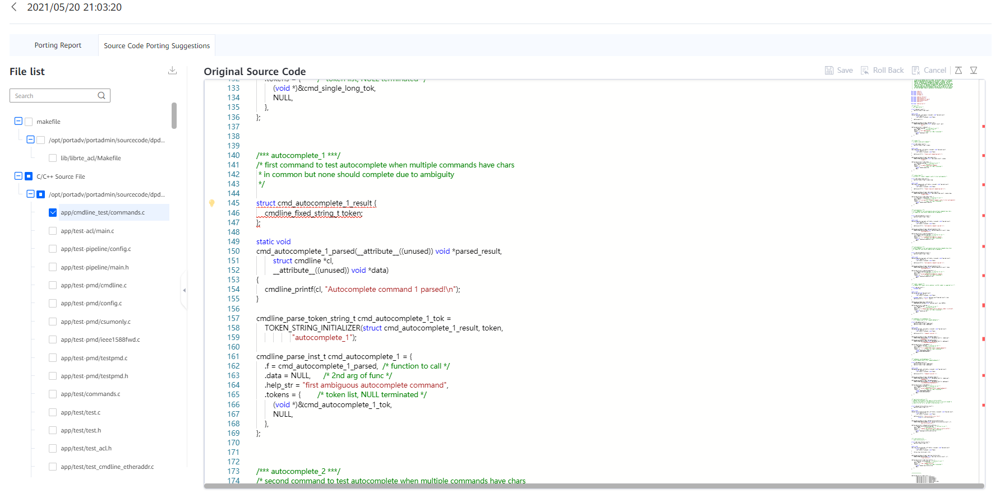

Prerequisites
The analysis task is complete.
Procedure

When editing the original code, save the modification in time. Otherwise, the modification may be lost due to session timeout.
- In the Operation column of the report, click View Suggested Source Code.
- Click the Source Code Porting Suggestions tab to view the source code porting suggestions.Figure 1 Source Code Porting Suggestions
Table 1 Parameter description Parameter
Description
File list
Lists the source code files analyzed.
Original Source Code
Displays the original source code.

- You can modify the source code. After the modification, click Save, Undo, or Cancel in the upper right corner as required.
- You can move the cursor to the code with a red wavy line and click Quick Fix in the floating message to apply the change automatically. You can also select Apply modifications of this class in this file to modify the same type of code in batches.
- To download a source code file, select the file on the left and click the download icon.
- Assembly does not support re-scanning after porting and modification. Re-scanning may cause inaccurate analysis result.